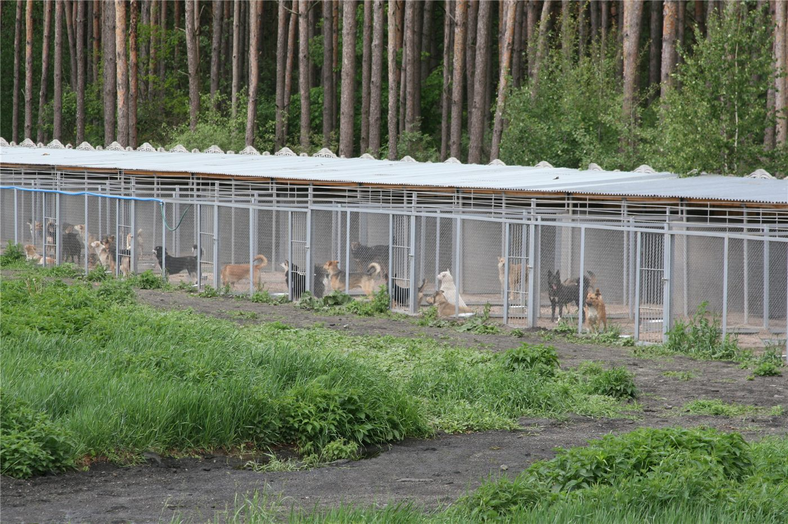

신베이 '부적절 사육' 신고 587건…압수는 6건 그쳐
대만 신베이시에서 반려동물 부적절 사육 신고가 587건 접수됐지만, 실제 압수(격리) 조치로 이어진 것은 6건에 그친 것으로 나타났다. 동물 복지 행정의 한계가 드러났다.
임숙분 기자 · 2026.06.19
橋사회

연합보는 신베이시의 부적절 사육 신고가 587건에 달했으나 압수는 6건에 그쳤다고 전했다. 신고와 실제 조치 사이의 큰 격차가 과제로 지적됐다.
광고 문의 · 300×250신고와 조치의 간극
부적절 사육 신고가 많아도 실제 격리·압수로 이어지기는 쉽지 않다. 법적 요건, 증거 확보, 보호 공간의 한계 등이 걸림돌이다. 동물 학대를 막으려면 신고 이후의 조치 역량을 키워야 한다는 지적이 나온다.
동물 복지에 대한 사회적 관심은 커지고 있지만, 행정·제도가 이를 따라가지 못하는 면이 있다. 신고 처리 절차와 보호 인프라의 보강이 필요하다.
華橋時報는 동물 복지와 생활 행정 사안을 중립적으로 전한다. 반려동물을 기르는 화인 가정에도 관련 제도는 참고가 된다.
출처·참고 (사실 확인용 — 본문은 직접 재작성)
· 연합보(聯合報) 2026.06.19 '不當飼養 新北通報587件 僅6件沒入'
· 연합보(聯合報) 2026.06.19 '不當飼養 新北通報587件 僅6件沒入'